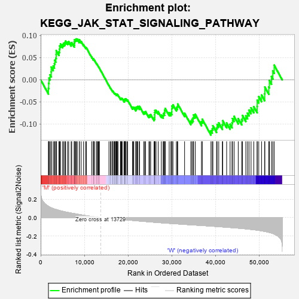
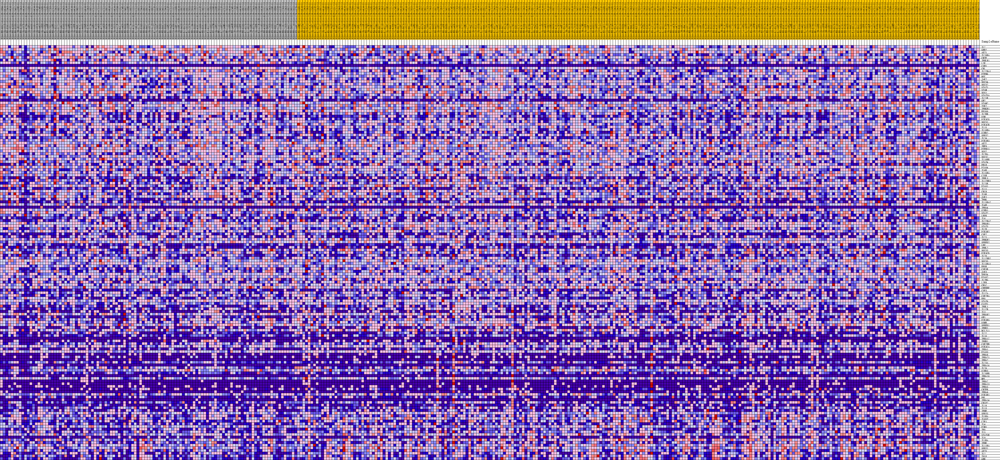
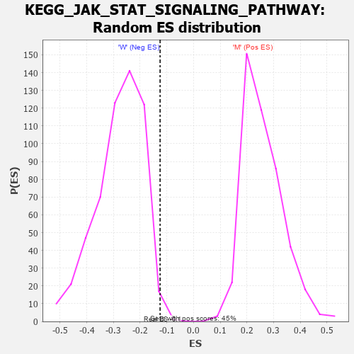

| Dataset | MUC16.MUC16.cls#M_versus_W.MUC16.cls#M_versus_W_repos |
| Phenotype | MUC16.cls#M_versus_W_repos |
| Upregulated in class | W |
| GeneSet | KEGG_JAK_STAT_SIGNALING_PATHWAY |
| Enrichment Score (ES) | -0.12518522 |
| Normalized Enrichment Score (NES) | -0.45156884 |
| Nominal p-value | 0.9945652 |
| FDR q-value | 0.98156923 |
| FWER p-Value | 1.0 |

| PROBE | DESCRIPTION (from dataset) | GENE SYMBOL | GENE_TITLE | RANK IN GENE LIST | RANK METRIC SCORE | RUNNING ES | CORE ENRICHMENT | |
|---|---|---|---|---|---|---|---|---|
| 1 | IL7 | na | 1774 | 0.123 | -0.0192 | No | ||
| 2 | GRB2 | na | 1842 | 0.121 | -0.0077 | No | ||
| 3 | AKT1 | na | 1908 | 0.119 | 0.0036 | No | ||
| 4 | IL20RA | na | 2147 | 0.113 | 0.0112 | No | ||
| 5 | CNTF | na | 2412 | 0.107 | 0.0177 | No | ||
| 6 | IFNLR1 | na | 2428 | 0.107 | 0.0287 | No | ||
| 7 | LIF | na | 2868 | 0.099 | 0.0311 | No | ||
| 8 | CSH1 | na | 3137 | 0.094 | 0.0362 | No | ||
| 9 | CBL | na | 3237 | 0.093 | 0.0441 | No | ||
| 10 | IL22RA1 | na | 3476 | 0.089 | 0.0492 | No | ||
| 11 | PTPN6 | na | 3557 | 0.088 | 0.0571 | No | ||
| 12 | MYC | na | 3574 | 0.088 | 0.0660 | No | ||
| 13 | JAK2 | na | 4184 | 0.080 | 0.0634 | No | ||
| 14 | SOCS4 | na | 4318 | 0.078 | 0.0691 | No | ||
| 15 | SOCS2 | na | 4363 | 0.077 | 0.0765 | No | ||
| 16 | STAT1 | na | 4545 | 0.075 | 0.0810 | No | ||
| 17 | STAM | na | 5027 | 0.069 | 0.0796 | No | ||
| 18 | SOS1 | na | 5248 | 0.067 | 0.0826 | No | ||
| 19 | STAT5A | na | 5541 | 0.063 | 0.0840 | No | ||
| 20 | IL21R | na | 5704 | 0.062 | 0.0875 | No | ||
| 21 | GH2 | na | 6159 | 0.057 | 0.0853 | No | ||
| 22 | STAM2 | na | 6419 | 0.054 | 0.0864 | No | ||
| 23 | TYK2 | na | 6980 | 0.049 | 0.0814 | No | ||
| 24 | IFNGR1 | na | 7104 | 0.048 | 0.0842 | No | ||
| 25 | EP300 | na | 7680 | 0.044 | 0.0784 | No | ||
| 26 | IL2RB | na | 7709 | 0.044 | 0.0825 | No | ||
| 27 | OSM | na | 7737 | 0.043 | 0.0865 | No | ||
| 28 | PIK3CG | na | 7764 | 0.043 | 0.0906 | No | ||
| 29 | SOCS1 | na | 7994 | 0.041 | 0.0908 | No | ||
| 30 | PIK3CB | na | 8139 | 0.040 | 0.0924 | No | ||
| 31 | IL15 | na | 8383 | 0.038 | 0.0920 | No | ||
| 32 | IL10RA | na | 8822 | 0.034 | 0.0877 | No | ||
| 33 | CCND2 | na | 8860 | 0.034 | 0.0906 | No | ||
| 34 | SPRY2 | na | 9271 | 0.031 | 0.0864 | No | ||
| 35 | IL24 | na | 9806 | 0.026 | 0.0795 | No | ||
| 36 | PIK3R3 | na | 10272 | 0.023 | 0.0734 | No | ||
| 37 | AKT2 | na | 10469 | 0.021 | 0.0721 | No | ||
| 38 | IRF9 | na | 11671 | 0.013 | 0.0517 | No | ||
| 39 | PTPN11 | na | 12051 | 0.011 | 0.0459 | No | ||
| 40 | SOS2 | na | 12058 | 0.011 | 0.0470 | No | ||
| 41 | IL2RA | na | 12129 | 0.010 | 0.0467 | No | ||
| 42 | SOCS7 | na | 12390 | 0.008 | 0.0429 | No | ||
| 43 | IL10RB | na | 12797 | 0.006 | 0.0362 | No | ||
| 44 | STAT4 | na | 12842 | 0.006 | 0.0359 | No | ||
| 45 | PRLR | na | 13063 | 0.004 | 0.0324 | No | ||
| 46 | PIAS4 | na | 13196 | 0.003 | 0.0303 | No | ||
| 47 | IL6R | na | 13388 | 0.002 | 0.0271 | No | ||
| 48 | IL15RA | na | 13431 | 0.002 | 0.0265 | No | ||
| 49 | CISH | na | 15630 | -0.003 | -0.0131 | No | ||
| 50 | IFNL3 | na | 15980 | -0.005 | -0.0189 | No | ||
| 51 | IL12RB1 | na | 16105 | -0.006 | -0.0206 | No | ||
| 52 | IL23R | na | 16437 | -0.007 | -0.0258 | No | ||
| 53 | PIAS1 | na | 16472 | -0.008 | -0.0256 | No | ||
| 54 | IL11 | na | 16510 | -0.008 | -0.0255 | No | ||
| 55 | CBLB | na | 16784 | -0.009 | -0.0294 | No | ||
| 56 | IL9R | na | 16945 | -0.010 | -0.0313 | No | ||
| 57 | JAK1 | na | 16998 | -0.010 | -0.0311 | No | ||
| 58 | IFNG | na | 17090 | -0.011 | -0.0316 | No | ||
| 59 | IL13RA2 | na | 17272 | -0.012 | -0.0337 | No | ||
| 60 | IL4R | na | 17317 | -0.012 | -0.0332 | No | ||
| 61 | IFNA4 | na | 17462 | -0.013 | -0.0345 | No | ||
| 62 | CCND1 | na | 17466 | -0.013 | -0.0332 | No | ||
| 63 | STAT2 | na | 17530 | -0.013 | -0.0329 | No | ||
| 64 | LEPR | na | 17701 | -0.014 | -0.0345 | No | ||
| 65 | IL6 | na | 18270 | -0.017 | -0.0431 | No | ||
| 66 | IL22RA2 | na | 18342 | -0.017 | -0.0425 | No | ||
| 67 | IFNAR1 | na | 18393 | -0.018 | -0.0416 | No | ||
| 68 | STAT3 | na | 18530 | -0.018 | -0.0421 | No | ||
| 69 | IL7R | na | 18656 | -0.019 | -0.0424 | No | ||
| 70 | PIK3R2 | na | 19058 | -0.021 | -0.0475 | No | ||
| 71 | CSF2 | na | 19199 | -0.021 | -0.0478 | No | ||
| 72 | IL21 | na | 19269 | -0.022 | -0.0467 | No | ||
| 73 | IFNGR2 | na | 19270 | -0.022 | -0.0444 | No | ||
| 74 | SPRED2 | na | 19342 | -0.022 | -0.0434 | No | ||
| 75 | LEP | na | 19451 | -0.023 | -0.0429 | No | ||
| 76 | IFNL2 | na | 19720 | -0.024 | -0.0453 | No | ||
| 77 | SOCS3 | na | 19906 | -0.025 | -0.0461 | No | ||
| 78 | PIK3CD | na | 21039 | -0.030 | -0.0634 | No | ||
| 79 | IL20 | na | 21141 | -0.030 | -0.0621 | No | ||
| 80 | IL12RB2 | na | 21315 | -0.031 | -0.0619 | No | ||
| 81 | SOCS5 | na | 21766 | -0.033 | -0.0666 | No | ||
| 82 | IL13RA1 | na | 21839 | -0.033 | -0.0644 | No | ||
| 83 | EPOR | na | 21888 | -0.034 | -0.0618 | No | ||
| 84 | CSF3R | na | 22111 | -0.034 | -0.0622 | No | ||
| 85 | JAK3 | na | 22204 | -0.035 | -0.0602 | No | ||
| 86 | SPRY4 | na | 22587 | -0.037 | -0.0632 | No | ||
| 87 | PIAS2 | na | 22629 | -0.037 | -0.0601 | No | ||
| 88 | IL2RG | na | 23616 | -0.041 | -0.0737 | No | ||
| 89 | LIFR | na | 23811 | -0.041 | -0.0729 | No | ||
| 90 | CBLC | na | 24006 | -0.042 | -0.0719 | No | ||
| 91 | CREBBP | na | 24772 | -0.045 | -0.0811 | No | ||
| 92 | CSF3 | na | 24958 | -0.046 | -0.0796 | No | ||
| 93 | IL12A | na | 25181 | -0.047 | -0.0787 | No | ||
| 94 | CSF2RA | na | 25954 | -0.050 | -0.0874 | No | ||
| 95 | EPO | na | 26087 | -0.050 | -0.0845 | No | ||
| 96 | STAT6 | na | 26093 | -0.050 | -0.0793 | No | ||
| 97 | CLCF1 | na | 26108 | -0.050 | -0.0743 | No | ||
| 98 | IFNL1 | na | 26137 | -0.050 | -0.0695 | No | ||
| 99 | IL12B | na | 26413 | -0.051 | -0.0690 | No | ||
| 100 | IL3 | na | 26900 | -0.053 | -0.0723 | No | ||
| 101 | IFNAR2 | na | 27621 | -0.056 | -0.0794 | No | ||
| 102 | GH1 | na | 28042 | -0.057 | -0.0810 | No | ||
| 103 | PIK3R5 | na | 28119 | -0.058 | -0.0763 | No | ||
| 104 | OSMR | na | 28344 | -0.058 | -0.0742 | No | ||
| 105 | SPRED1 | na | 28376 | -0.059 | -0.0686 | No | ||
| 106 | IFNW1 | na | 28512 | -0.059 | -0.0648 | No | ||
| 107 | BCL2L1 | na | 29417 | -0.062 | -0.0747 | No | ||
| 108 | IL22 | na | 29797 | -0.063 | -0.0749 | No | ||
| 109 | IL10 | na | 30019 | -0.064 | -0.0722 | No | ||
| 110 | IFNA17 | na | 30021 | -0.064 | -0.0654 | No | ||
| 111 | IFNB1 | na | 30058 | -0.064 | -0.0593 | No | ||
| 112 | CSF2RB | na | 30281 | -0.065 | -0.0565 | No | ||
| 113 | PIK3CA | na | 31062 | -0.067 | -0.0636 | No | ||
| 114 | IFNA1 | na | 31272 | -0.068 | -0.0602 | No | ||
| 115 | PIAS3 | na | 31366 | -0.068 | -0.0548 | No | ||
| 116 | IFNA8 | na | 32939 | -0.073 | -0.0756 | No | ||
| 117 | IFNA21 | na | 34371 | -0.078 | -0.0933 | No | ||
| 118 | IFNA2 | na | 34628 | -0.079 | -0.0897 | No | ||
| 119 | IL23A | na | 34898 | -0.079 | -0.0862 | No | ||
| 120 | IFNA16 | na | 34991 | -0.080 | -0.0795 | No | ||
| 121 | IL26 | na | 35372 | -0.081 | -0.0779 | No | ||
| 122 | CCND3 | na | 36806 | -0.085 | -0.0949 | No | ||
| 123 | IL20RB | na | 36993 | -0.086 | -0.0892 | No | ||
| 124 | IFNA10 | na | 38975 | -0.092 | -0.1155 | Yes | ||
| 125 | MPL | na | 39271 | -0.093 | -0.1110 | Yes | ||
| 126 | IFNA7 | na | 39420 | -0.094 | -0.1038 | Yes | ||
| 127 | IFNA13 | na | 40258 | -0.096 | -0.1089 | Yes | ||
| 128 | IFNA5 | na | 40388 | -0.097 | -0.1010 | Yes | ||
| 129 | CNTFR | na | 40759 | -0.098 | -0.0974 | Yes | ||
| 130 | IFNA6 | na | 41584 | -0.101 | -0.1017 | Yes | ||
| 131 | PIK3R1 | na | 41671 | -0.101 | -0.0926 | Yes | ||
| 132 | PRL | na | 42565 | -0.104 | -0.0978 | Yes | ||
| 133 | IFNA14 | na | 43350 | -0.107 | -0.1007 | Yes | ||
| 134 | CRLF2 | na | 43799 | -0.109 | -0.0973 | Yes | ||
| 135 | IL19 | na | 43902 | -0.109 | -0.0877 | Yes | ||
| 136 | IL13 | na | 44273 | -0.111 | -0.0827 | Yes | ||
| 137 | IFNE | na | 45221 | -0.114 | -0.0879 | Yes | ||
| 138 | SPRY3 | na | 46005 | -0.118 | -0.0897 | Yes | ||
| 139 | IL5RA | na | 46199 | -0.119 | -0.0807 | Yes | ||
| 140 | IL6ST | na | 46957 | -0.122 | -0.0816 | Yes | ||
| 141 | CTF1 | na | 47342 | -0.124 | -0.0755 | Yes | ||
| 142 | IL4 | na | 47690 | -0.126 | -0.0685 | Yes | ||
| 143 | PIM1 | na | 48152 | -0.128 | -0.0634 | Yes | ||
| 144 | TPO | na | 48774 | -0.132 | -0.0607 | Yes | ||
| 145 | IL5 | na | 49546 | -0.137 | -0.0603 | Yes | ||
| 146 | STAT5B | na | 49566 | -0.137 | -0.0463 | Yes | ||
| 147 | IL9 | na | 49917 | -0.139 | -0.0380 | Yes | ||
| 148 | IL3RA | na | 50557 | -0.144 | -0.0344 | Yes | ||
| 149 | IFNK | na | 51268 | -0.150 | -0.0316 | Yes | ||
| 150 | IL11RA | na | 51304 | -0.150 | -0.0164 | Yes | ||
| 151 | SPRY1 | na | 52222 | -0.159 | -0.0163 | Yes | ||
| 152 | AKT3 | na | 52341 | -0.161 | -0.0015 | Yes | ||
| 153 | IL2 | na | 52824 | -0.167 | 0.0074 | Yes | ||
| 154 | TSLP | na | 53128 | -0.172 | 0.0200 | Yes | ||
| 155 | GHR | na | 53437 | -0.178 | 0.0332 | Yes |

